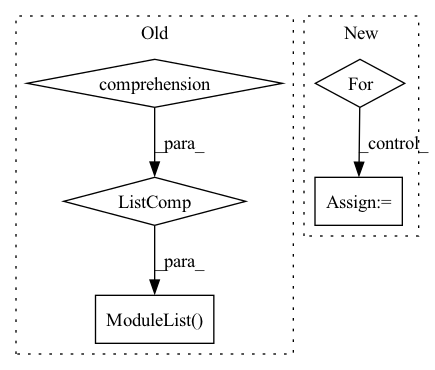

Pattern ID :1908

Before Change
task_per_metric = 1
self._tasks_iter = self._unfused_tasks_iter
self._metrics_computations: nn.ModuleList = nn.ModuleList(
[
// This Pyre error seems to be Pyre"s bug as it can be inferred by mypy
// according to https://github.com/python/mypy/issues/3048.
// pyre-fixme[45]: Cannot instantiate abstract class `RecMetricCoputation`.
self._computation_class(
my_rank,
batch_size,
task_per_metric,
self._window_size,
compute_on_all_ranks,
self._should_validate_update,
process_group,
**{**kwargs, **self._get_task_kwargs(task_config)},
)
for task_config in (
[self._tasks]
if compute_mode == RecComputeMode.FUSED_TASKS_COMPUTATION
else self._tasks
)
]
)
def _get_task_kwargs(
self, task_config: Union[RecTaskInfo, List[RecTaskInfo]]
) -> Dict[str, Any]:
After Change
task_per_metric = 1
self._tasks_iter = self._unfused_tasks_iter
for task_config in (
[self._tasks]
if compute_mode == RecComputeMode.FUSED_TASKS_COMPUTATION
else self._tasks
):
// This Pyre error seems to be Pyre"s bug as it can be inferred by mypy
// according to https://github.com/python/mypy/issues/3048.
// pyre-fixme[45]: Cannot instantiate abstract class `RecMetricCoputation`.
metric_computation = self._computation_class(
my_rank,
batch_size,
task_per_metric,
self._window_size,
compute_on_all_ranks,
self._should_validate_update,
process_group,
**{**kwargs, **self._get_task_kwargs(task_config)},
)
required_inputs = self._get_task_required_inputs(task_config)
self._metrics_computations.append(metric_computation)
self._required_inputs.update(required_inputs)
In pattern: SUPERPATTERN
Frequency: 3
Non-data size: 5
Instances
Fragment ID: 3466081
Project Name: facebookresearch/torchrec
Commit Name: f6708dac83f9a6a6b1023a8e5742bb2c2d4aa7fd
Time: 2022-11-17
Author: stellaya@meta.com
File Name: torchrec/metrics/rec_metric.py
Class Name: RecMetric
Method Name: __init__
Parent Class: nn.Module,abc.ABC
Fragment ID: 3466082
Project Name: pytorch/torchrec
Commit Name: f6708dac83f9a6a6b1023a8e5742bb2c2d4aa7fd
Time: 2022-11-17
Author: stellaya@meta.com
File Name: torchrec/metrics/rec_metric.py
Class Name: RecMetric
Method Name: __init__
Parent Class: nn.Module,abc.ABC
Fragment ID: 3466083
Project Name: r9y9/nnsvs
Commit Name: 3a55678dd65a885ab71d052024dc329e00007bb0
Time: 2020-09-30
Author: taroushirani@gmail.com
File Name: nnsvs/model.py
Class Name: MDN
Method Name: __init__
Parent Class: nn.Module